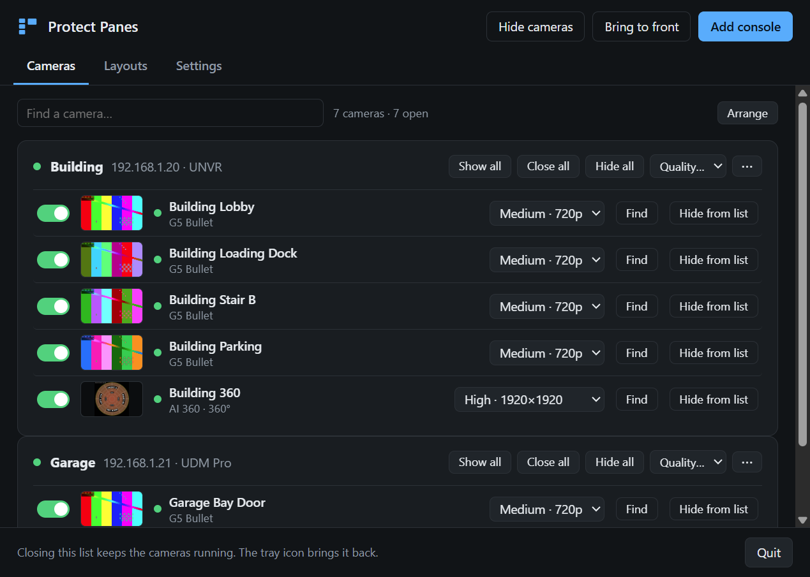
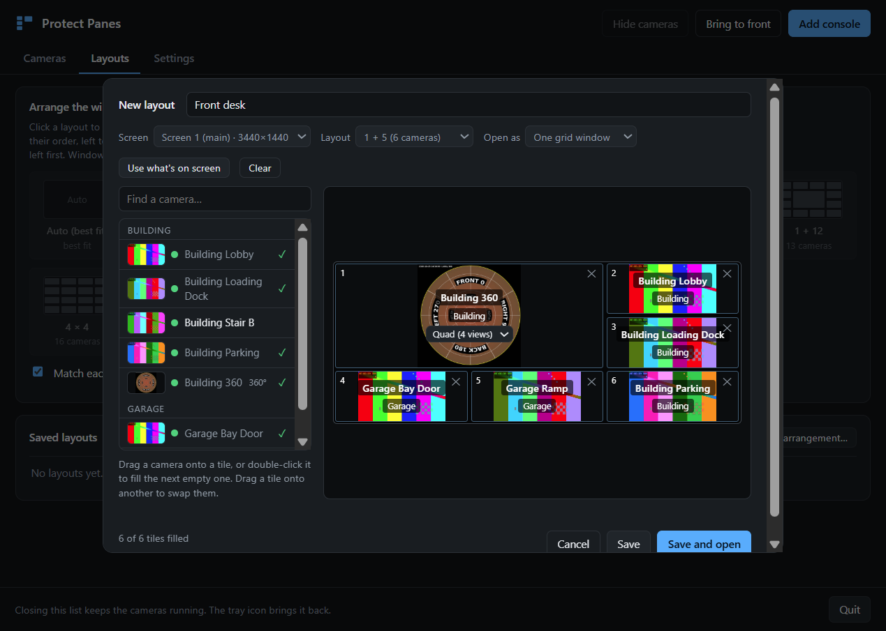
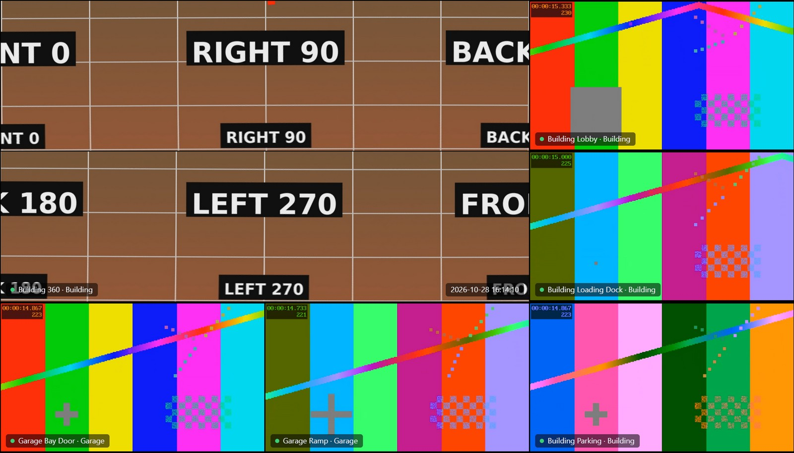
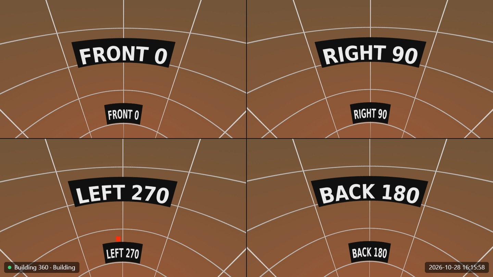

Your cameras, where you want them
One window per camera
Borderless windows you place and size anywhere, on any monitor. They go back to the same places at every start, and when an unplugged monitor comes back. Opening a camera doesn't take the focus from the program you're working in.
Grid windows and layouts
Drag cameras onto a grid (1 + 5, 2 + 8, 4 × 4 and more) and open it as one window you can maximize or put in full screen, or as separate windows. Switch layouts from the tray. Double-click a tile to enlarge it.
Imports Protect liveviews
Open a liveview saved on the console as a grid, with the same layout and each camera in its tile. Tiles that cycle through several cameras in Protect keep cycling.
No RTSP, no cloud
Video comes over the console's own livestream connection, the one Protect's web interface uses, so RTSPS can stay off on every camera. It signs in by IP with a local, view-only account: no UI.com account, no MFA prompt.
360° cameras
Fisheye cameras open in Quad view: four virtual pan-tilt-zoom views of one stream. Drag to aim, scroll to zoom, or switch to Single view or Panorama. It's done on the graphics chip, with no extra bandwidth.
Light on an office PC
GPU video decoding, Medium quality by default, and each tile picks Low, Medium or High from its size. Minimized windows stop streaming. Runs on an office PC with integrated Intel graphics.
Several consoles
Connects to several UniFi OS consoles at once (UDM, UNVR, Cloud Key) and lists each one's cameras with a preview. The camera on a UniFi Access door reader (UA G3 Pro) plays too.
Careful with your network
It remembers each console's security certificate from the first connection and stops if a different one shows up, so a device posing as the console doesn't get the password. Passwords are encrypted for your Windows account.
Signed updates
It checks for updates and installs them with one click. A download is installed only if it carries the release signature and matches its signed checksum. Most updates are a couple of MB.
A closer look




All pictures are from the app's demo mode: test patterns and a synthetic 360° image stand in for camera video.
Install
Installer (recommended)
Download ProtectPanes-Setup.exe and run it. It installs for your Windows user only, with no admin prompt, adds Start menu and desktop shortcuts, and uninstalls from Settings → Apps.
The app isn't code-signed, so Windows shows Windows protected your PC the first time: click More info, then Run anyway.
Portable
Download the zip, unzip it somewhere in your own profile, such as %LOCALAPPDATA%\Programs\Protect Panes, and run ProtectPanes.exe.
Avoid C:\Program Files, which updates can't write to, and folders at the root of C:\, which other accounts on the PC can change.
Set up each console
In UniFi OS, add a user restricted to local access only and give it View Only access in Protect. A UI.com account won't work: those need MFA.
Then click Add console in Protect Panes and enter a name, the console's IP address, and that user's name and password.
You need a UniFi OS console running Protect on the same network as the PC. Cameras set to H.265 need a PC that decodes HEVC in hardware; otherwise set them to Standard (H.264) in Protect. Live view only: there's no playback, timeline or events.
Feedback
Found a bug or have an idea? Open an issue on GitHub. The connection log (camera list → Settings → Open log folder) helps with anything that won't connect.